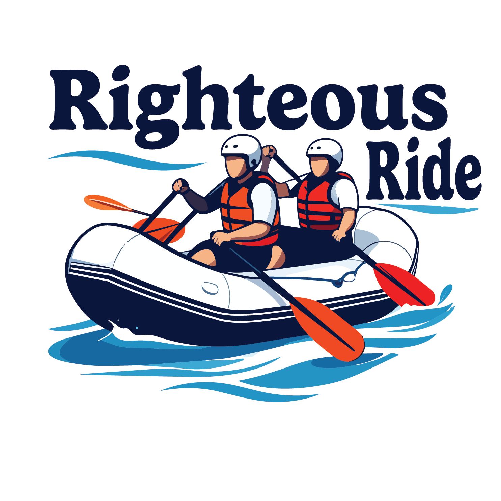

Overview
Purpose
At Righteous Ride Rafting Co., our purpose is to deliver high-octane, unforgettable outdoor adventures while maintaining an uncompromised commitment to safety and environmental stewardship. We empower thrill-seekers and families alike to conquer wild waters, foster deep connections with nature, and build lasting memories through expert-guided river expeditions. By combining top-tier equipment, seasoned river guides, and a passion for the great outdoors, we aim to make the rush of white water rafting accessible, thrilling, and transformative for every adventurer who steps into our rafts.
Audience
Our target audience spans adrenaline enthusiasts, families, and group organizers who seek safe yet exhilarating outdoor experiences. From experienced thrill-seekers looking to tackle technical Class IV and V rapids to first-time paddlers and multi-generational families wanting a memorable weekend getaway, we cater to adventurers of all skill levels. We also serve corporate teams, student clubs, and vacationing groups looking for custom, guided river trips that combine physical excitement, team building, and a shared appreciation for the outdoors.
Branding
Website Logo

Style Guide
Color Palette
| Primary | Secondary | Accent 1 | Accent 2 |
|---|---|---|---|
Typography
Heading Font: Bangers
Paragraph Font: Lato
Normal paragraph example
Last summer, we guided a group on our signature full-day expedition through the wild turns of the Devil’s Backbone canyon. The morning kicked off with high energy as our lead guide, Marcus, ran the team through a thorough safety brief before launching into the roaring Class IV rapids. The highlight of the trip came at the halfway mark: after successfully navigating a heart-pounding drop through the "Dragon's Tail" surge, the crew pulled up to a pristine, secluded riverbank for a well-deserved riverside lunch. Swimming in calm canyon pools and taking in the towering granite cliffs, the group conquered over twelve miles of white water before returning to base with exhausted smiles and a newly shared bond.
Colored paragraph example
Following the trip, veteran paddler Sarah Jenkins left a 5-star review capturing the experience: "I’ve rafted rivers all across the Pacific Northwest, but Righteous Ride Rafting Co. delivered one of the absolute best days on the water I've ever had. Marcus and his crew struck the perfect balance between absolute safety and pure, unadulterated thrill—getting us through the 'Dragon's Tail' safely while keeping the energy sky-high the whole time. The riverside lunch was a fantastic touch, and the gear was in top-notch condition. If you want an authentic, heart-pumping river adventure with guides who truly know their stuff, book with these guys immediately!"
Navigation with Hover
Site Map
Wireframes
Home